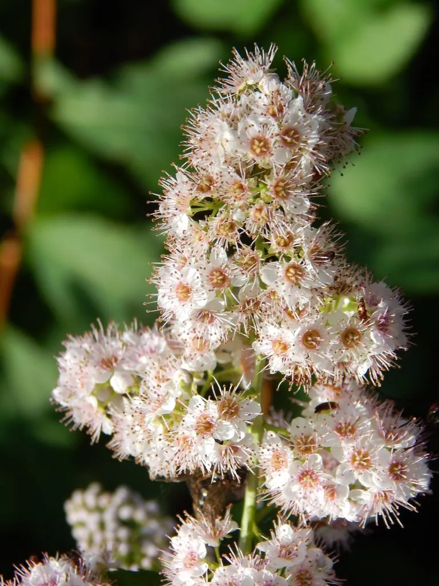

灌木与花木 · 植物界
金山绣线菊 Spiraea japonica 'Gold Mound'

蔷薇科落叶小灌木，新叶金黄，夏季开粉红色小花，耐寒耐修剪，是园林中常用的彩叶与花境地被植物。
- 分类
- 门被子植物门纲木兰纲目蔷薇目科蔷薇科属绣线菊属
- 栖息环境
- 园林花境、路缘与水岸，喜光耐寒
- 地理分布
- 原产东亚；中国各地园林广泛栽培
- 保护级别
- 暂无评估；栽培品种，未见野生居群
物种志
金山绣线菊为蔷薇科绣线菊属落叶小灌木，是日本绣线菊的园艺品种，高 40–60 厘米，枝条细密、开展。叶互生，卵形至卵状披针形，新叶金黄色，后渐转黄绿色，边缘具锯齿。伞房花序顶生，花小，粉红色，花期 6–7 月；果实为蓇葖果，果期 8–9 月。
金山绣线菊原产东亚，中国各地园林广泛栽培，喜光，也耐半阴，耐寒、耐旱，适宜疏松肥沃、排水良好的土壤。它新叶金黄、株形低矮，夏季开粉红色小花，是园林中常用的彩叶与花境地被植物，常成片种植于路缘、水岸与草坪边缘。栽培以扦插繁殖为主，花后修剪可保持株形紧凑、促进二次开花，光照不足时叶色会变淡。
形态与习性
- 株高40–60 厘米，株形低矮
- 花期6–7 月，粉红色小花
- 果期8–9 月，蓇葖果
- 叶色新叶金黄，后转黄绿色
- 光照喜光，光照足叶色更艳
- 水分耐旱，忌积水
- 主要用途彩叶地被、花境与路缘绿化
趣味知识
- 金山绣线菊的新叶呈金黄色，是园林中少见的黄色系彩叶灌木。
- 它的株形低矮，适合成片种植作地被。
- 金山绣线菊是日本绣线菊的园艺品种，并非独立物种。
- 花后修剪可促发新枝，使叶色更鲜艳、株形更紧凑。